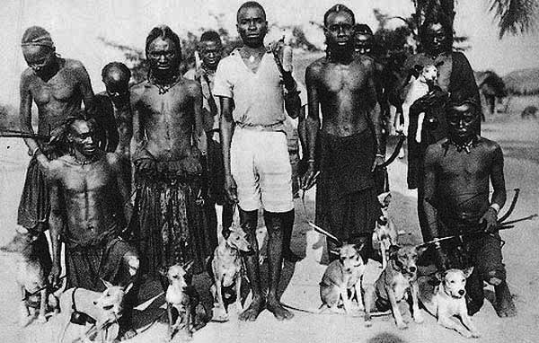
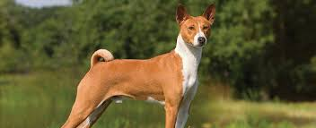
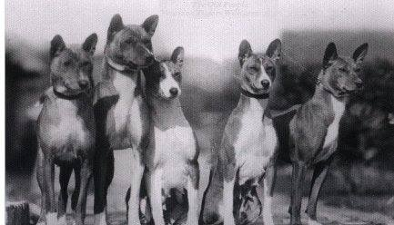

The Basenji is a breed of hunting dog. It was bred from stock that originated in central Africa. Most of the major kennel clubs in the English-speaking world place the breed in the hound group—more specifically, in the sighthound type. The Fédération Cynologique Internationale places the breed in its group five (spitz and primitive types), and the United Kennel Club (US) places the breed in its Sighthound and pariah group.
The Basenji produces an unusual yodel-like sound (commonly called a "baroo"), due to its unusually shaped larynx. This trait also gives the Basenji the nickname "barkless dog".
Basenjis share many unique traits with pariah dog types. Basenjis, like dingoes, New Guinea singing dogs and some other breeds of dog, come into estrus only once annually as compared to other dog breeds, which may have two or more breeding seasons every year. Both dingoes and Basenji lack a distinctive odor, and are prone to howls, yodels, and other vocalizations over the characteristic bark of modern dog breeds.
  